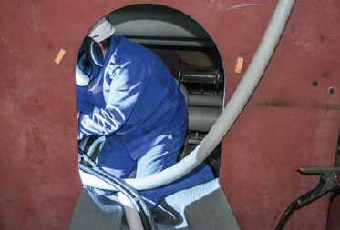
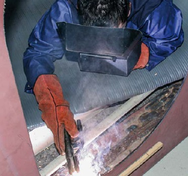
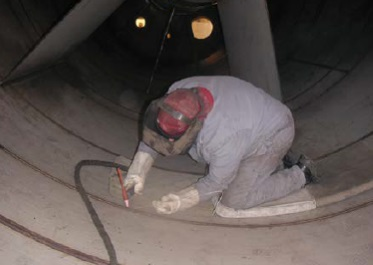
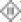

Erhöhte elektrische Gefährdung liegt vor, wenn elektrische Anlagen und Betriebsmittel in leitfähigen Bereichen mit begrenzter Bewegungsfreiheit oder in sonstigen Räumen und Bereichen mit leitfähiger Umgebung betrieben werden (siehe Abb. 5-1).

Abb. 5-1 Beispiel für erhöhte elektrische Gefährdung beim Schweißen
Ein leitfähiger Bereich mit begrenzter Bewegungsfreiheit liegt vor, wenn dessen Begrenzungen im Wesentlichen aus Metallteilen oder leitfähigen Teilen bestehen, eine Person mit ihrem Körper großflächig in Berührung mit der umgebenden Begrenzung stehen kann und die Möglichkeit der Unterbrechung dieser Berührung eingeschränkt ist. Beispiele für entsprechende Tätigkeiten:
Sonstige Räume und Bereiche mit leitfähiger Umgebung liegen vor, wenn die Begrenzung vollständig oder teilweise aus metallischen oder elektrisch leitfähigen Teilen besteht und eine großflächige Berührung nicht zwingend gegeben ist. Sie kann jedoch aufgrund der Arbeitshaltung auftreten, zum Beispiel:

Abb. 5-2 Lichtbogenschweißen unter erhöhter elektrischer Gefährdung mit Hilfe isolierender Zwischenlage
Der Schutz der Schweißfachkraft ist bei erhöhter elektrischer Gefährdung durch zwei Maßnahmen sicherzustellen:
Die in Tabelle 2 genannten maximalen Leerlaufspannungen für erhöhte elektrische Gefährdung müssen durch die eingesetzte Stromquelle garantiert werden. Höhere Spannungen sind nur durch speziell ein die Stromquelle implementierte Gefahrenminderungseinrichtungen zulässig.
Schweißstromquellen, die für Lichtbogenarbeiten unter erhöhter elektrischer Gefährdung geeignet sind, müssen deutlich erkennbar und dauerhaft das Symbol nach Abb. 5-3 oder die bisherigen Symbole bei Wechselstromquellen und bei Gleichstromquellen tragen.
Abb. 5-3 Kennzeichnung für Schweißstromquellen zum Lichtbogenschweißen unter erhöhter elektrischer Gefährdung
Werden Arbeiten sowohl unter erhöhter elektrischer Gefährdung als auch ohne erhöhte elektrische Gefährdung durchgeführt, sollten – um lebensgefährdende Verwechselungen von vornherein auszuschließen – nur Stromquellen eingesetzt werden, die zur Verwendung unter erhöhter elektrischer Gefährdung geeignet und entsprechend gekennzeichnet sind. Da Gleichstrom bei gleicher Stromstärke weniger gefährlich als Wechselstrom ist, sind Gleichstromquellen zu empfehlen.
Auch Plasmastromquellen sind für die Anwendung unter erhöhter elektrischer Gefährdung zulässig, wenn sie die Anforderungen an Gefahrenminderungseinrichtungen erfüllen.
Geräte, die für den Einsatz unter erhöhter elektrischer Gefährdung geeignet sind, bieten allein keinen ausreichenden Schutz beim Schweißen. Deshalb ist es besonders unter erhöhter elektrischer Gefährdung notwendig, die Isolation der schweißenden Person sicherzustellen, z. B. durch isolierende Zwischenlagen (siehe Abb. 5-4) und isolierende Kopfbedeckung.
Zusätzliche Gefahren können durch die Netzspannung entstehen, z. B. bei Beschädigung der Netzzuleitung. Daher dürfen Schweißstromquellen nicht in Arbeitsbereichen aufgestellt werden, in denen unter erhöhter elektrischer Gefährdung geschweißt wird. Ist es durch die Art des Arbeitsplatzes nicht zu umgehen, Schweißstromquellen auf leitfähigen Flächen aufzustellen, muss die Netzzuleitung geschützt verlegt werden, um einer Kabelbeschädigung vorzubeugen. Weiterhin ist die Netzzuleitung mit einer Fehlerstromschutzeinrichtung (RCD) mit 30 mA Nennfehlerstrom abzusichern. Die Steckdose muss sich außerhalb des Arbeitsbereichs bzw. der elektrisch leitfähigen Flächen befinden. Es kann auch ein Trenntransformator, der ebenfalls außerhalb der leitfähigen Flächen positioniert werden muss, zur Einspeisung benutzt werden.

Abb. 5-4 Geschützt durch isolierende Unterlage
Ortsveränderliche Betriebsmittel dürfen nur unter Anwendung einer der folgenden Schutzmaßnahmen betrieben werden:

) verwendet werden. Schutzart mindestens IP 2X, d. h. isolieren oder fingersicher abdeckenAn Stellen, an denen Leitungen mechanisch besonders beansprucht werden können, sind sie durch geschützte Verlegungoder Abdeckung zu schützen. Leitungsroller (Kabeltrommeln) müssen für erschwerte Bedingungen geeignet ( ) und nach den Festlegungen für schutzisolierte Betriebsmittel gebaut sein.
Ortsveränderliche Stromquellen für Schutzkleinspannung oder Schutztrennung müssen außerhalb des leitfähigen Bereiches mit begrenzter Bewegungsfreiheit aufgestellt sein. Ist dies aus technischen Gründen nicht möglich, z. B. bei sehr langen Rohrleitungen, Kanälen, Kastenträgern usw., darf im Einzelfall die Stromquelle innerhalb des Bereichs aufgestellt werden, wenn als Zuleitung mindestens Leitungen des Typs NSSHÖU oder bei geschützt verlegter Leitung H0 7 RN-F verwendet und diese über eine Fehlerstromschutzeinrichtung mit Nennfehlerstrom bis zu 30 mA betrieben werden.
Bei der Auswahl von ortsveränderlichen elektrischen Betriebsmitteln ist anzustreben, nur solche der Schutzklasse II (Schutzisolierung) zu verwenden. Ortsveränderliche Trenntransformatoren müssen schutzisoliert sein.
Ortsveränderliche elektrische Betriebsmittel dürfen mit den Schutzmaßnahmen für leitfähige Bereiche mit begrenzter Bewegungsfreiheit betrieben werden, wie im Abschnitt 5.3.1 ausgeführt. Alternativ kann als Schutzmaßnahme der Schutz durch automatische Abschaltung mit Fehlerstromschutzeinrichtung bis zu 30 mA Nennfehlerstrom eingesetzt werden.
Weiterführende Informationen zum Abschnitt 5.3 können der DGUV Information 203-004 "Einsatz von elektrischen Betriebsmitteln bei erhöhter elektrischer Gefährdung" entnommen werden.